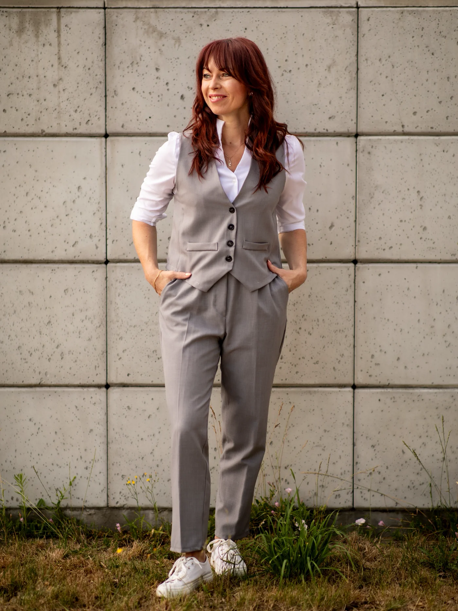
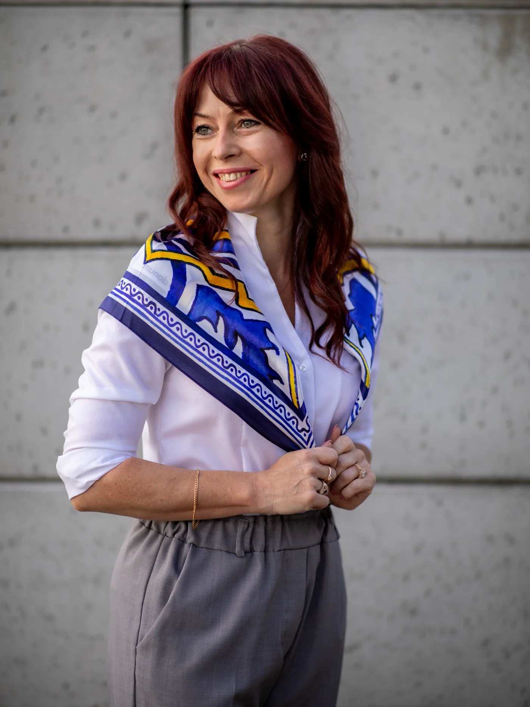
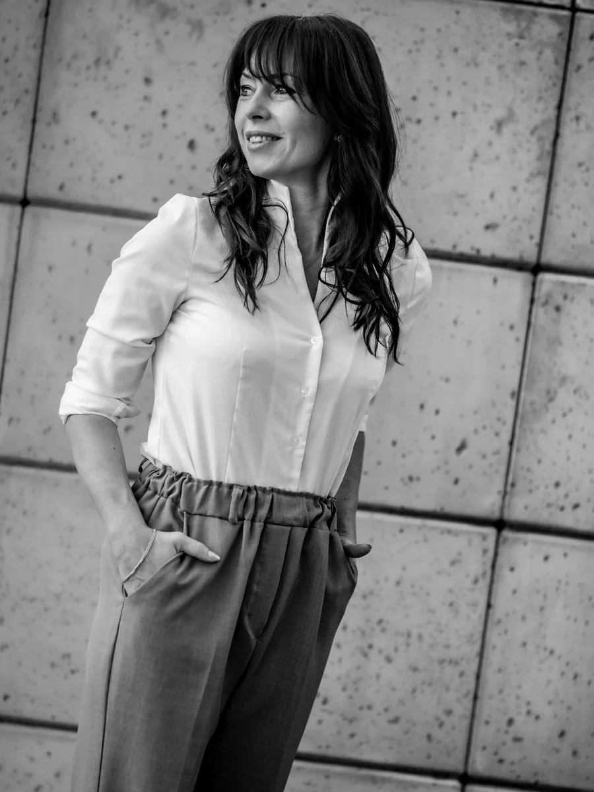

◎
Relational Agency
Relacjonalna sprawczość w edukacji
Rozwijana perspektywa teoretyczna i badawcza dotycząca sprawczości ucznia i nauczyciela w relacjach, kulturze uczestnictwa i warunkach działania.
Dowiedz się więcej →Badania · Kształcenie nauczycieli · Praktyka
Badam, uczę i współpracuję, projektując środowiska uczenia się, w których relacje, różnorodność i odpowiedzialność wspierają sprawczość uczniów i nauczycieli.
Projektowanie środowisk uczenia się w dobie AI — dla edukacji przyszłości.

Sprawczość nie jest indywidualna. Jest relacjonalna.
Interesują mnie warunki, w których edukacja daje ludziom przestrzeń do współdecydowania, odpowiedzialnego działania i rozwoju — również w środowiskach coraz silniej współtworzonych przez technologie AI.
Obszary badawcze
Każdy obszar łączy badania, dydaktykę akademicką i zastosowanie wiedzy w praktyce edukacyjnej.
Rozwijana perspektywa teoretyczna i badawcza dotycząca sprawczości ucznia i nauczyciela w relacjach, kulturze uczestnictwa i warunkach działania.
Dowiedz się więcej →Projektowanie i badanie środowisk, w których przyszli nauczyciele uczą się przez decyzje, refleksję, badanie praktyki i współpracę.
Dowiedz się więcej →Pedagogical translanguaging, edukacja językowa i projektowanie praktyki w klasach zróżnicowanych językowo i kulturowo.
Dowiedz się więcej →Pedagogiczne projektowanie środowisk, w których AI wspiera — zamiast zastępować — relacje, refleksję, decyzje i sprawczość.
Dowiedz się więcej →Moje podejście
Badania są dla mnie punktem wyjścia do lepszego rozumienia sytuacji edukacyjnej, projektowania warunków uczenia się oraz refleksyjnego działania z nauczycielami i studentami.
Wybrane projekty
Na stronie głównej pokazuję najważniejsze linie działań; pełne portfolio jest dostępne w zakładce Projekty.
Publikacje
Pełna bibliografia będzie uzupełniana o DOI, linki i profile bibliograficzne.
Partycypacyjna kultura kształcenia w praktyce szkolnej. Toruń: Adam Marszałek.
Zobacz publikację →Seminare
Czytaj więcej →Problemy Wczesnej Edukacji
Czytaj więcej →Języki Obce w Szkole
Czytaj więcej →
Nauka → praktyka
Autorska przestrzeń knowledge mobilisation: krótkie microtutorials dla nauczycieli i teacher educators, zawsze oparte na badaniach i prowadzące od idei do zastosowania.
4–5-minutowy film wokół jednej idei pedagogicznej.
Publikacja naukowa lub research basis materiału.
Checklista, karta refleksji, case lub materiał do pracy.
Dokumentowanie użycia, odbioru i kolejnych zastosowań.
Materiały po spotkaniach
Jedno miejsce, do którego możesz skierować studentów, nauczycieli i uczestników wydarzeń.

Slajdy, materiały do pobrania, refleksje i dalsze źródła.
Zapytaj o materiały →Materiały do warsztatu poświęconego learner agency i projektowaniu decyzji.
Zapytaj o materiały →O mnie
Łączę wieloletnie doświadczenie szkolne z badaniami pedagogicznymi i projektowaniem kształcenia przyszłych nauczycieli. Interesuje mnie to, co dzieje się pomiędzy teorią a praktyką: jak wiedza przekłada się na decyzje, relacje i warunki uczenia się.
Kontakt i współpraca
Badania · teacher education · warsztaty · wystąpienia · projekty europejskie · knowledge mobilisation
anna-sarbiewska@wp.pl ↗Więcej kontaktów →